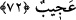
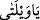
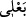
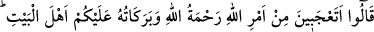
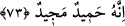

72. (İbrahim’in karısı:) “Olacak şey değil! Ben bir kocakarı, bu kocam da bir
ihtiyar iken çocuk mu doğuracağım? Bu gerçekten şaşılacak bir şey!” dedi.
Sanki “Peki İbrahim (a.s.)’ın karısı kendisine bu müjde verilince ne dedi?’ diye
sorulmuş ve cevaben şöyle dedi denilmiştir: “Olacak şey değil!” Bu kelime “ ≈
”,
esasen kötü durumlarda kullanılır. Çünkü insan veyline, yani helak oluşuna seslenerek:
‘Gel yetiş! Çünkü şu anda içinde bulunduğun durum gelmeni gerektiriyor.’ der. Fakat
sonraları, hayret verici her durum için kullanılmaya başlanmıştır. Tıpkı: “Yâ
sübhanallah!” ifadesi gibi ki buradaki mânâ da budur.
Müftî Sa’dî şöyle diyor: “Kötü durumlarda veyl ve benzeri ifadeler kullanmak
insanın başına gelen istenmeyen bir durumun verdiği sıkıntıdan ileri gelmektedir. Fakat
sonraları insanın başına gelen bütün hayret verici durumlar için kullanılır olmuştur.”
“Ben” doksan ya da doksan dokuz yaşında şimdiye kadar hiç doğum yapmamış “bir
kocakarı, bu” gördüğünüz “kocam da” yüz ya da yüz yirmi yaşında “bir ihtiyar iken
çocuk mu doğuracağım?” (
) kelimesi burada ‘koca’ mânâsında olmakla birlikte
aslında işleri yürüten demektir.
el-Kevâşî’de der ki: “Bu kocam da” derken elçilerin bildiği birine işâret ediyor
gibidir. Şöyle ki: “Bu bildiğiniz kişi benim kocamdır.” diyor ve ekliyor: “Bir ihtiyar
iken” yani “ona bir ihtiyar olarak işaret ediyorum” Şayet İbrahim, elçilerin tanımadığı
biri olsaydı, sadece ihtiyarlığı esnasında Sâre’nin kocası olması, gençliğinde ise kocası
olmaması gerekirdi.
Sâre kocasının durumunu beyan etmezden önce, kendi durumunu beyan ediyor. Çünkü
mezkur doğum yapma fiili açısından kendi durumu kocasının durumundan daha
uygunsuzdur. Çünkü ihtiyar olsalar bile erkeklerin çocuğu olabilmekte, ama ihtiyarlayan
kadınlar çocuk sahibi olamamaktadırlar.
“Bu” yani bizim gibi iki ihtiyarın çocuk sahibi olabilmesi, Allah’ın kulları hakkında
belirlediği genel kurallar bakımından “gerçekten şaşılacak bir şey!” dedi.” Sâre’nin
maksadı, böyle bir şeyi Allah’ın kudreti açısından uzak görmek değil, normal bir hayret
ifadesi ile birlikte Allah’ın kendisine bahşettiği nimetin büyüklüğünü dile getirmektir.
Çünkü Allah’ın kudretine şaşmak, Allah’ın gücünü bilmemek demek olacağı için, küfrü
gerektirir.